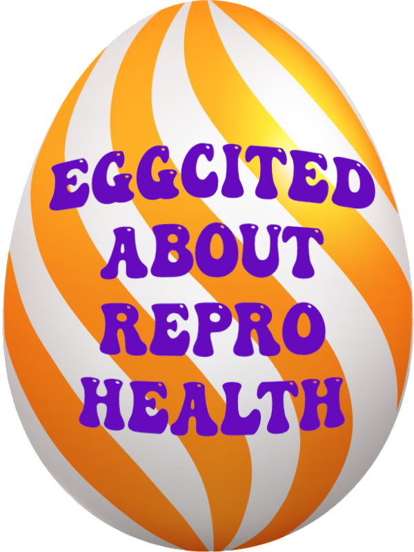
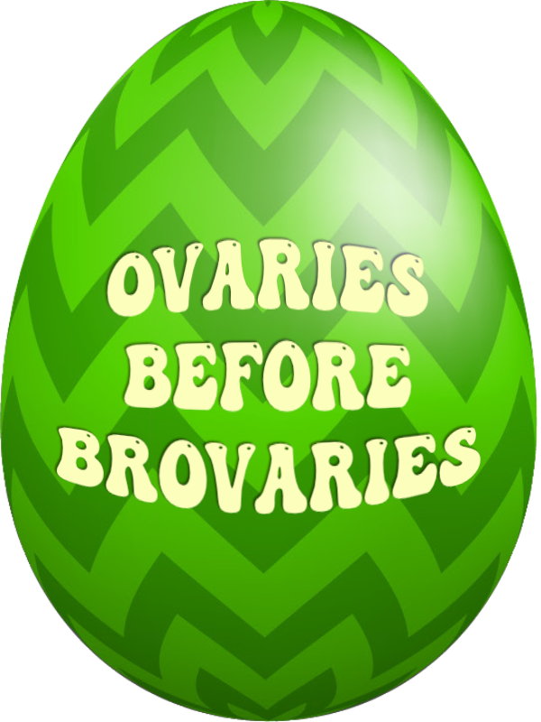
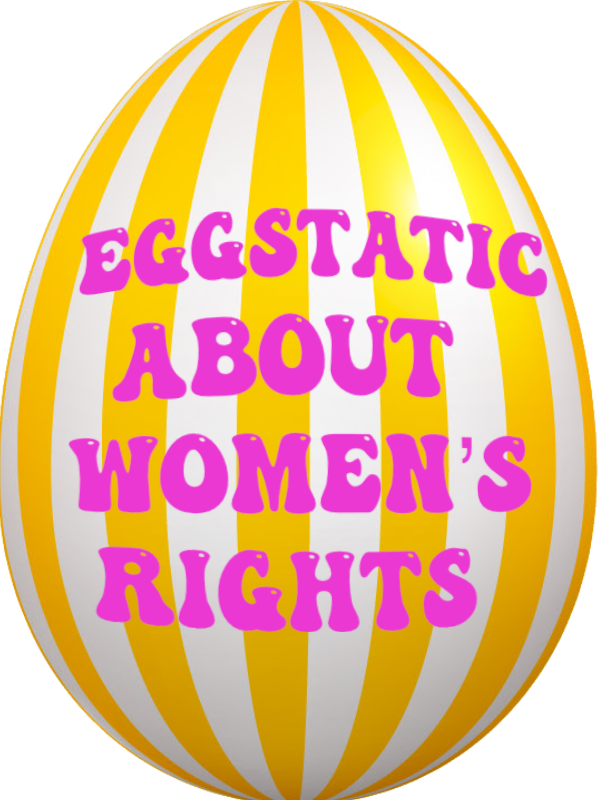
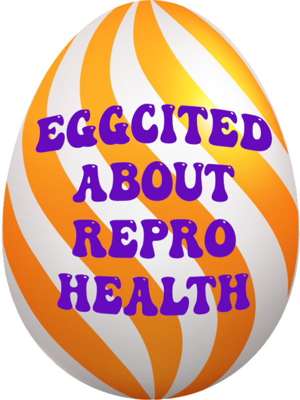
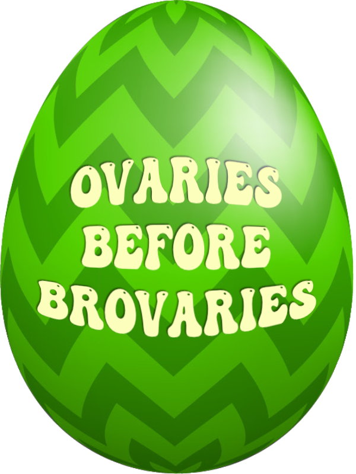
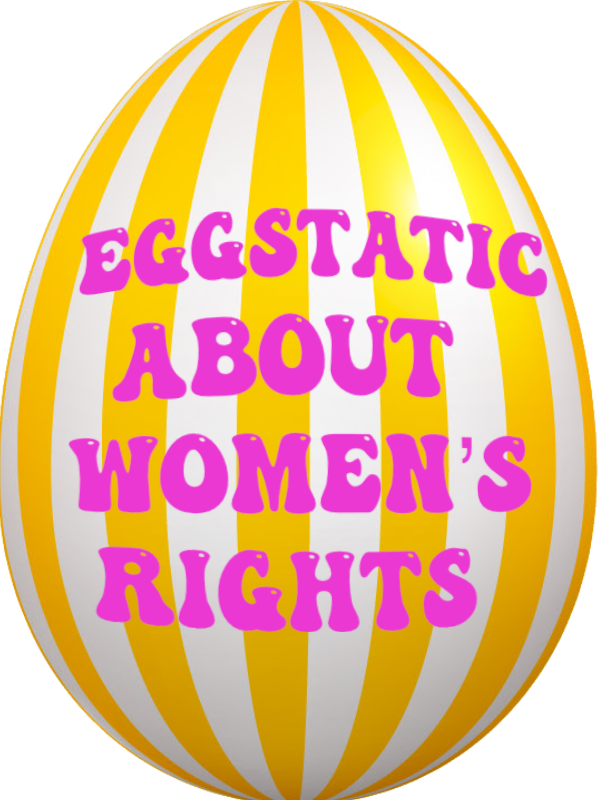

Let's play a game
The bad eggs in the White House are rolling over our rights and want us to breed like rabbits, but we say "Shell no!" to their freedom seeds. Roll with us to show your support for women's rights and health.

"We're gonna have tremendous goodies in the bag for women too. The women, between the fertilization and all of the other things we're talking about, it's gonna be great… Fertilization, I'm still very proud of it, I don't care. I'll be known as the fertilization president." President Donald J. Trump, March 26, 2025
The bad eggs in the White House are rolling over our rights and want us to breed like rabbits, but we say "Shell no!" to their freedom seeds. Roll with us to show your support for women's rights and health.
Choose your ova and roll your way across the White House lawn to get resistance tips. Watch out for obstacles!
Download an egg-ceptional message of encouragement for other reSisters.
Spread the egg-citement on your favorite social media platforms.
 




